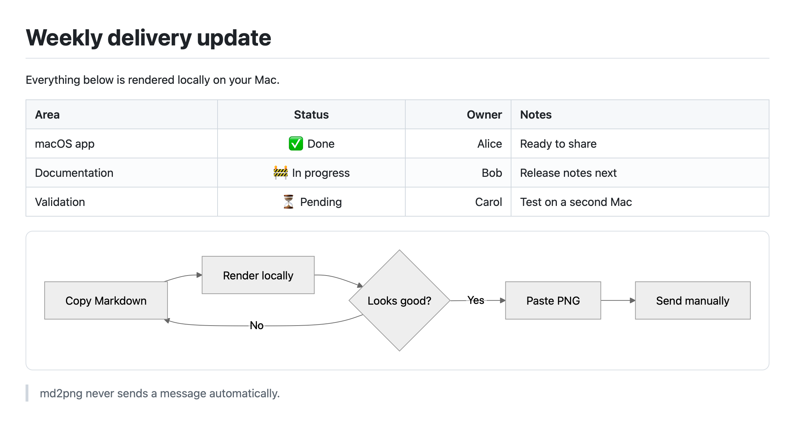

Five themes. Three widths.
Choose a palette and a Compact, Standard, or Wide canvas. Your choices stay local and are captured in every opaque PNG.
Turn tables, highlighted code, and Mermaid diagrams into a crisp image—without uploading your content or sending anything for you.
macOS 14+ · Apple silicon · Free and open source
# Weekly delivery update | Area | Status | |:--|:--:| | macOS app | ✅ Done | | Documentation | 🚧 In progress | ```mermaid flowchart LR Copy --> Render --> Paste ```
# 每周交付进度 | 模块 | 状态 | |:--|:--:| | macOS App | ✅ 完成 | | 文档 | 🚧 进行中 | ```mermaid flowchart LR 复制 --> 渲染 --> 粘贴 ```

100% local rendering
No Accessibility permission
Never pastes or sends
Works offline
One shortcut. No detour.
Copy Markdown from any editor or app.
Press the global shortcut. md2png works locally in the background.
Paste the PNG, review it, then send it yourself.
More than one shortcut
Choose a palette and a Compact, Standard, or Wide canvas. Your choices stay local and are captured in every opaque PNG.
Preview at actual size or fit-to-window, zoom in, copy again, save explicitly, open in Apple Preview, or drag the PNG into another app.
Choose a local file, use Finder’s Open With command, or invoke its Service. Successful Finder renders open in Preview without changing the clipboard.
If one image exceeds the height limit, export numbered PNG slices. md2png prefers block boundaries and never overwrites an existing export folder.
The formatting survives the trip
Some chat apps flatten the parts of Markdown that matter most. md2png preserves the visual hierarchy in a Retina-friendly image that looks consistent on desktop and mobile.
Local means local
Rendering uses a non-persistent local WebKit view with bundled scripts and styles. There is no cloud service, analytics, telemetry, account, bot, or destination-app integration.
Read the privacy detailsInstall with confidence
The current release is Developer ID–signed and Apple-notarized for Apple silicon Macs running macOS 14 or later.
Download the latest DMG from GitHub Releases.
Open the DMG and drag md2png to Applications.
Launch md2png, copy Markdown, then press ⌃⌘ X.
Good to know
No. Rendering uses bundled resources in a local, non-persistent WebKit view. The app has no analytics, telemetry, account, or cloud renderer.
No. The basic copy, render, and paste workflow uses the clipboard and a global shortcut without Accessibility permission.
No. Public builds currently support Apple silicon Macs running macOS 14 or later.
A standard first-open confirmation is expected for downloaded apps. If macOS says the app cannot be verified, delete that copy and download the notarized DMG again from the official Releases page.
Updates never start automatically. In About md2png, choose Check for Updates to preview signed release notes, then explicitly download, verify, and install the update. A notarized DMG remains available as a fallback. To uninstall, quit the app and move it from Applications to Trash; md2png does not keep a render history.
Small app. Clear job.
Free, open source, and built natively for Apple silicon Macs.